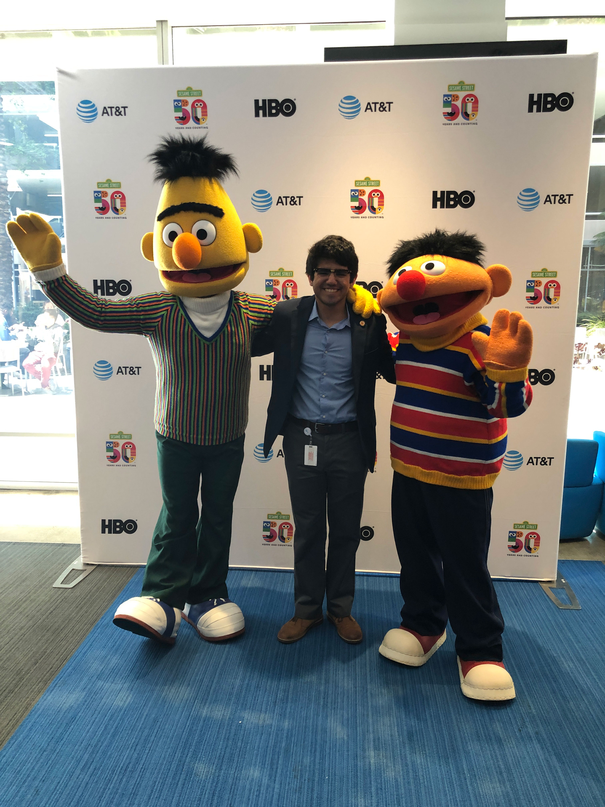

Proud 956-er. I was born in the Bronx, New York, but I was raised in the Rio Grande Valley. The RGV, as locals call it, is a region unlike any other I have visited. Although summers were dreadfully hot and humid, I always looked forward to them because I could get "raspas," or sno-cones.
As one of the only Jewish, non-Mexican Hispanics - I'm Salvadoran - in school growing up, I did my best to answer the many questions I inevitably got about my intersectional identity. The region and my identity have both hugely influenced my journalistic passions. I would like to report on underreprsented and underacknowledged people and groups.
Early on, I developed an interest in technology, especially mobile phones and the various hardware components that make them up. I would watch online reviews of the latest smartphones and read the coverage of technology companies. This interest led me to pursue computer engineering.
Tech journalism made an impact on me, as did political journalism during the 2016 presidential election. These influences, along with coursework in the Design, Cultures and Creativity honors college, energized me to add journalism as a double major.
Now in my final year of undergraduate studies, I am putting my planning into practice and seeking opportunities for after graduation. I hope to work in data science, and I am looking forward to building on all the skills I've honed at the wonderful University of Maryland.
